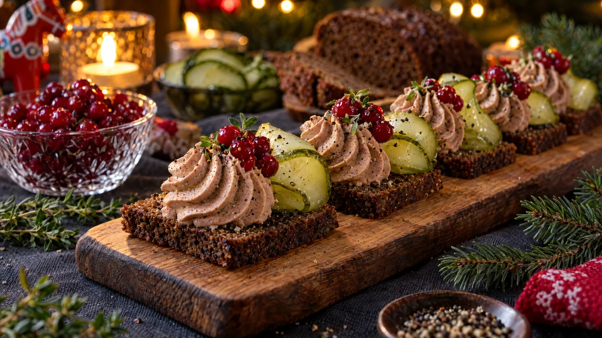

RESTFEST · RECEPTFörrätt · Mingelmat & tilltugg
Vispad leverpastej på rågbröd med picklad gurka och lingon
Leverpastejen från frukostbordet vispas med grädde till en fluffig mousse. Den spritsas på rostat rågbröd och toppas med knaprig snabbpicklad gurka, glänsande lingon och en kvist timjan. Smörgåsklassikern förklädd till fransk bistropaté, och en självklar bit på julbordet.
- Förberedelse
- 20 min + 20 min dragtid
- Tillagning
- 10 min
- Portioner
- 4 som förrätt (ca 12 bitar)
- Nivå
- Nybörjare
 Det här behöver du
Det här behöver du
Tryck på + vid det du behöver köpa.
Snabbpicklad gurka
Leverpastejmousse
Till servering
Gör så här
- Ta fram leverpastejen och smöret 20 minuter innan, rumsvarm pastej vispas lättare.
- Skiva gurkan tunt, 1–2 mm, med osthyvel eller mandolin. Rör ihop vatten, ättika, socker och salt tills sockret har löst sig. Häll lagen över gurkan och låt dra i minst 20 minuter.
- Vispa leverpastej, smör, timjan och svartpeppar slätt med elvisp i ca 1 minut.
- Vispa grädden till mjuka toppar i en annan skål. Vänd ner den i pastejen med en slickepott, försiktigt så att moussen blir luftig.
- Fyll moussen i en spritspåse med stjärntyll, eller i en fryspåse med ett avklippt hörn. Låt den vila i kylen i 15 minuter så att den håller formen.
- Skär varje brödskiva i 3 bitar. Rosta dem i en torr stekpanna på medelvärme, 1–2 minuter per sida, tills ytan är krispig. Låt bröden svalna helt, annars smälter moussen.
- Låt gurkan rinna av ordentligt på hushållspapper.
- Spritsa en hög rosett mousse på varje brödbit. Lägg 2 gurkskivor, vikta som en våg, bredvid rosetten och toppa med ½ tsk lingon.
Dekoration och servering
- Avsluta varje bit med några timjanblad och lite nymald svartpeppar.
- Lägg upp bitarna i en rad på ett avlångt träbräde eller en mörk skifferbricka.
- Välj rårörda lingon framför sylt, hela bär ser vackrare ut.
- Strö några extra lingon och timjankvistar direkt på brädet runt bitarna.
- Moussen kan göras en dag i förväg och förvaras i kylen, men montera bitarna precis före servering.
Mått och ugnstemperaturer
Måtten är svenska (dl, msk, tsk, krm). Ugnstemperaturerna gäller vanlig ugn med över- och undervärme; med varmluft, sänk med 20 grader.